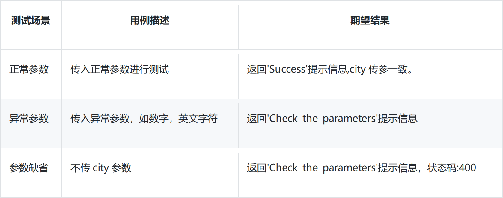
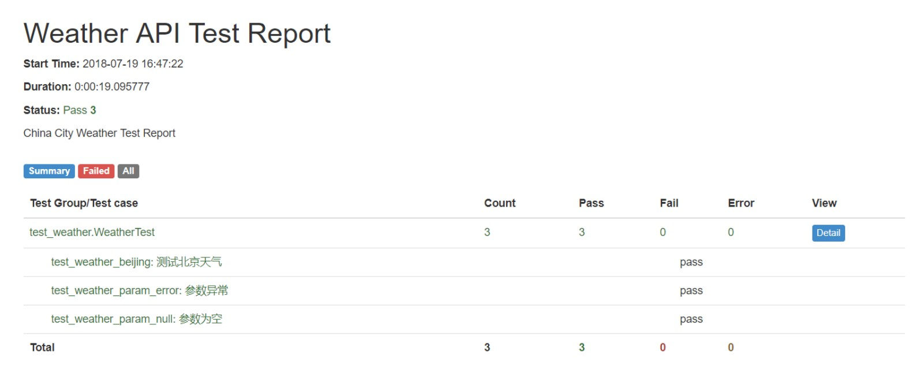

第2节：Python接口测试实践——基于天气API
测试案例
测试 API
测试的 API 为：天气 API • 接口 URL：https://www.sojson.com/open/api/weather/json.shtml • 请求方式:GET • 参数：city 为城市名称(仅支持国内城市)，支持的城市可以带上市、县、区之类,如：北京,深圳、南山区、 长沙市、长沙等等。 • 返回值格式如下(查询城市为北京)：
{
"date": "20180815",
"message": "Success !",
"status": 200,
"city": "北京",
"count": 22,
"data": {
"shidu": "86%",
"pm25": 13.0,
"pm10": 27.0,
"quality": "优",
"wendu": "25",
"ganmao": "各类人群可自由活动",
"yesterday": {
"date": "14 日星期二",
"sunrise": "05:23",
"high": "高温 29.0℃",
"low": "低温 24.0℃",
"sunset": "19:14",
"aqi": 20.0,
"fx": "东风",
"fl": "<3 级",
"type": "雷阵雨","notice": "带好雨具，别在树下躲雨"
},
"forecast": [{
"date": "15 日星期三",
"sunrise": "05:24",
"high": "高温 32.0℃",
"low": "低温 24.0℃",
"sunset": "19:12",
"aqi": 34.0,
"fx": "东北风",
"fl": "3-4 级",
"type": "多云",
"notice": "阴晴之间，谨防紫外线侵扰"
}, {
"date": "16 日星期四",
"sunrise": "05:25",
"high": "高温 30.0℃",
"low": "低温 22.0℃",
"sunset": "19:11",
"aqi": 43.0,
"fx": "无持续风向",
"fl": "<3 级",
"type": "多云",
"notice": "阴晴之间，谨防紫外线侵扰"
}, {
"date": "17 日星期五",
"sunrise": "05:26",
"high": "高温 29.0℃",
"low": "低温 22.0℃",
"sunset": "19:10",
"aqi": 61.0,
"fx": "东南风",
"fl": "<3 级",
"type": "阴",
"notice": "不要被阴云遮挡住好心情"
}, {
"date": "18 日星期六",
"sunrise": "05:27",
"high": "高温 30.0℃",
"low": "低温 22.0℃",
"sunset": "19:08",
"aqi": 65.0,
"fx": "东南风",
"fl": "<3 级",
"type": "多云","notice": "阴晴之间，谨防紫外线侵扰"
}, {
"date": "19 日星期日",
"sunrise": "05:28",
"high": "高温 31.0℃",
"low": "低温 21.0℃",
"sunset": "19:07",
"aqi": 67.0,
"fx": "东南风",
"fl": "<3 级",
"type": "晴",
"notice": "愿你拥有比阳光明媚的心情"
}]
}
}
测试场景
通过接口来查询 北京 的天气信息
代码实现
weather_api_test.py
import requests
from urllib import parse
#构造接口测试数据
data={'city':'北京'}
city=parse.urlencode(data).encode('utf-8')
url='https://www.sojson.com/open/api/weather/json.shtml'
#发送请求
r=requests.get(url,params=city)
# print(r.text)
#将返回结果转化为 Json 类型
response_data=r.json()#分别获取日期，响应信息，状态、和城市
print(response_data['date'])
print(response_data['message'])
print(response_data['status'])
print(response_data['city'])
#获取当日天气
print(response_data['data']['forecast'][0]['date'])
print(response_data['data']['forecast'][0]['type'])
print(response_data['data']['forecast'][0]['high'])
print(response_data['data']['forecast'][0]['low'])
注意： • 每个 IP 日调用额度 2000 次，超过过多，会直接封掉 IP 段。 • 每次请求间隔必须 3 秒一次，如果多次超过 3 秒内调用多次，会封掉 IP 段 • 更多注意事项
集成到 Unittest
应用背景
上面的案例只是针对单个场景进了接口调用，但是实际的接口测试需要针对不同的参数场景进行测试。另外还需要设置断言，生成测试报告。
用例设计

代码实现
weather_api_unittest.py
import unittest
import requests
from urllib import parse
from time import sleep
class WeatherTest(unittest.TestCase):
def setUp(self):
self.url='https://www.sojson.com/open/api/weather/json.shtml'
#代理设置，避免 ip 被封
# self.proxies={'http':'http://125.118.146.222:6666'}
def test_weather_beijing(self):
'''测试北京天气'''
data = {'city': '北京'}
city = parse.urlencode(data).encode('utf-8')
# r=requests.get(self.url,params=city,proxies=self.proxies)
r=requests.get(self.url,params=city)
result=r.json()
#断言 self.assertEqual(result['status'],200)
self.assertEqual(result['message'],'Success !')
self.assertEqual(result['city'],'北京')
#设置间隔时间，避免 ip 被封
sleep(3)
def test_weather_param_error(self):
'''参数异常'''
data={'city':'666'}
# r=requests.get(self.url,params=data,proxies=self.proxies)
r=requests.get(self.url,params=data)
result=r.json()
self.assertEqual(result['message'],'Check the parameters.')
sleep(3)
def test_weather_no_param(self):
'''参数缺省'''
# r=requests.get(self.url,params=data,proxies=self.proxies)
r=requests.get(self.url)
result=r.json()
self.assertEqual(result['message'],'Check the parameters.')
self.assertEqual(result['status'],400)
sleep(3)
if __name__ == '__main__':
unittest.main()
运行结果：
C:\Python35\python.exe D:/api_test/requests_api_test/weather_api_unittest.py
...
----------------------------------------------------------------------
Ran 3 tests in 10.312s
OK
Process finished with exit code 0\
生成测试报告
• 首先创建文件夹 reports 和 test_case • 下载 BSTestRunner • 创建 run.py 模块
run.py
import unittest
from BSTestRunner import BSTestRunner
import time
#指定测试用例和测试报告的路径
test_dir = './test_case'
report_dir = './reports'
#加载测试用例
discover = unittest.defaultTestLoader.discover(test_dir, pattern='test_weather.py')
#定义报告的文件格式
now = time.strftime("%Y-%m-%d %H_%M_%S")
report_name = report_dir + '/' + now + ' test_report.html'
#运行用例并生成测试报告
with open(report_name, 'wb') as f:
runner = BSTestRunner(stream=f, title="Weather API Test Report", description="China City Weather TestReport")
runner.run(discover)
运行之后可以看到测试报告如下：
